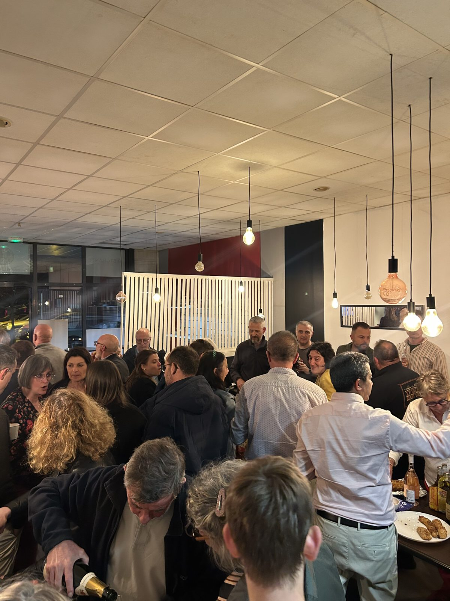
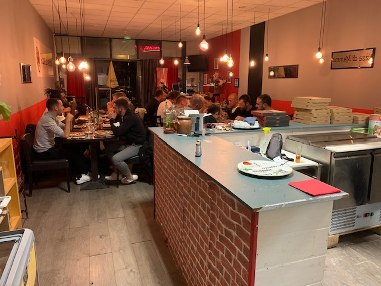

Pizza diMamma
Pizzeria artisanale à Idron, ouverte en 2018. Des pizzas fabriquées et cuites de façon artisanale, sur place ou à emporter.

17h30–22hSur place et à emporter
Deux façons d’en profiter
Sur place
ou à emporter
Sur place
Midi et soir, dans la salle.
11h–14h17h30–22h
À emporter
Commandez par téléphone, récupérez en quelques minutes.
05 59 35 77 38
Son histoire
De sa première boulangerie à Pau aux cuisines de Harrods à Londres, Taoufik a fait de la pâte son métier.
Lire son histoireSon histoire
Taoufik, pizzaïolo
De sa première boulangerie à Pau aux cuisines de Harrods à Londres, Taoufik a fait de la pâte son métier. Aujourd’hui, à Pizza di Mamma, c’est lui qui prépare la pâte de vos pizzas.
Originaire de Casablanca, Taoufik vient faire ses études à Toulouse. Son bac+5 en poche, il ouvre une boulangerie à Pau. Il devient ensuite chef de projet urbain à la Ville de Pau, se lance avec un kiosque à pizzas, puis travaille comme attaché parlementaire auprès d’une députée. La pizza l’emmène aussi à Perugia, en Italie, où il apprend le métier, et à Londres, où il exerce comme pizzaïolo chez Harrods. Parmi les clients qu’il y sert, il y a même quelques célébrités.
S’il ouvre son restaurant à Idron, c’est pour avoir la liberté de cuisiner comme il aime et retrouver le contact direct avec les clients. Chez Pizza di Mamma, il peut préparer lui-même sa pâte, sortir les pizzas du four et venir discuter avec ceux qui les dégustent.
Envie d’y goûter ? Taoufik vous accueille chez Pizza di Mamma, à Idron.
Infos pratiques
Venir ou
commander
Au Centre commercial Domaine du Roy, à deux pas de la rocade. Parking sur place.
Adresse
Centre commercial Domaine du Roy
2 allée Antoine de Bourbon
64320 Idron
Horaires
Midi : 11h–14h
Soir : 17h30–22h
Fermé dimanche et lundi